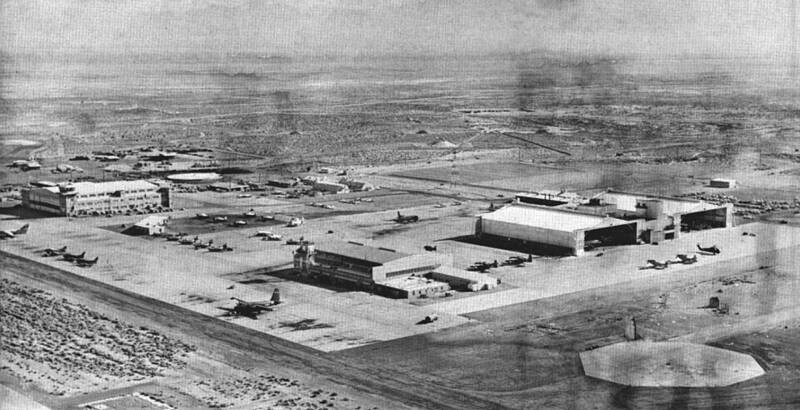

NAWS China Lake
California

Navy weapons research and test center. 1
Open in the interactive Watcher
Sources
- Naval Air Weapons Station China Lake Wikipedia
California

Navy weapons research and test center. 1
Open in the interactive Watcher